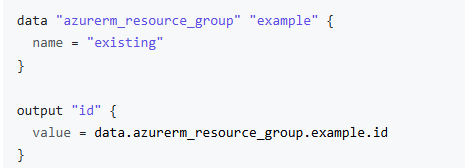
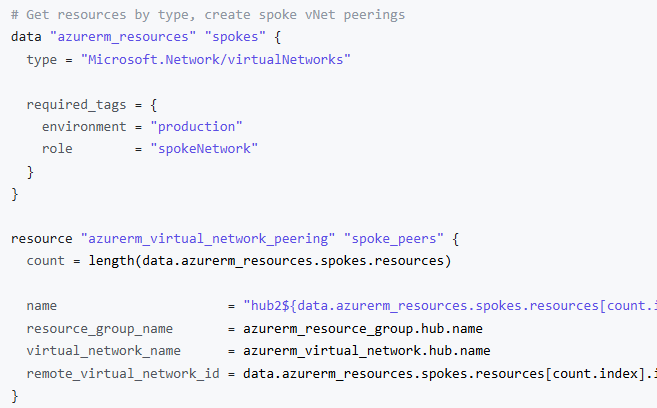
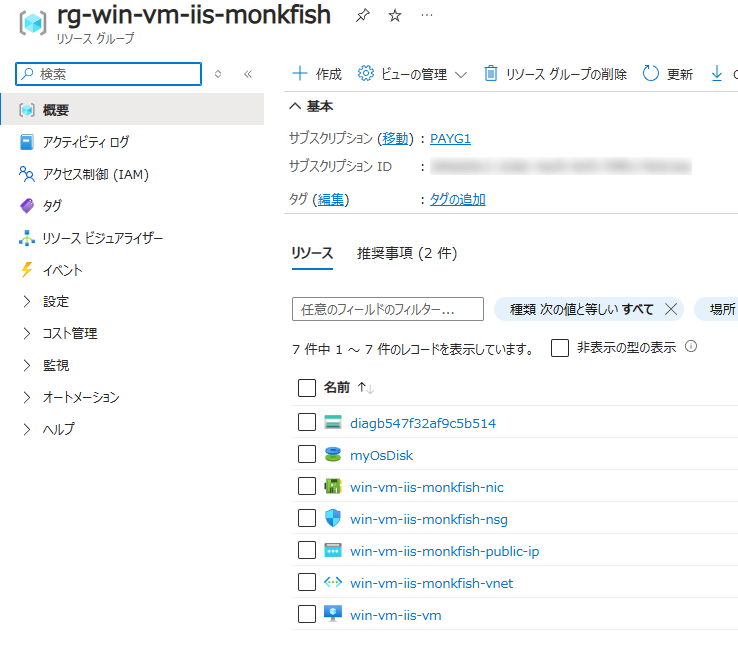
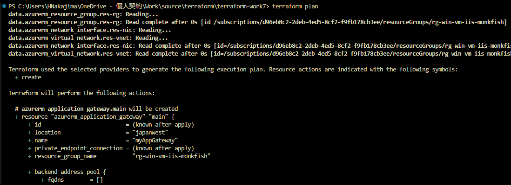
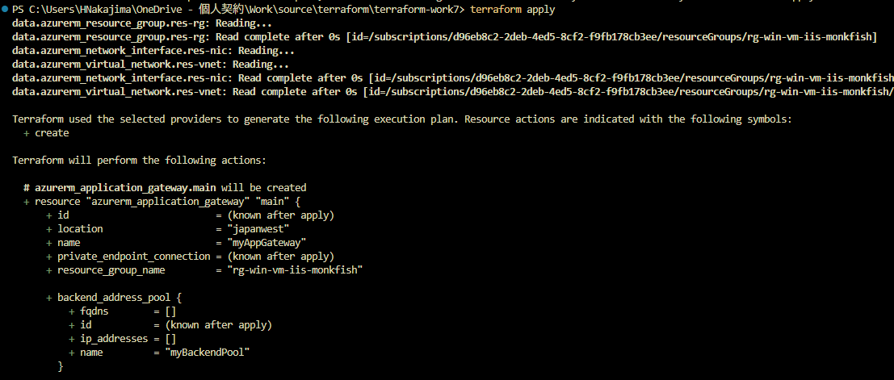
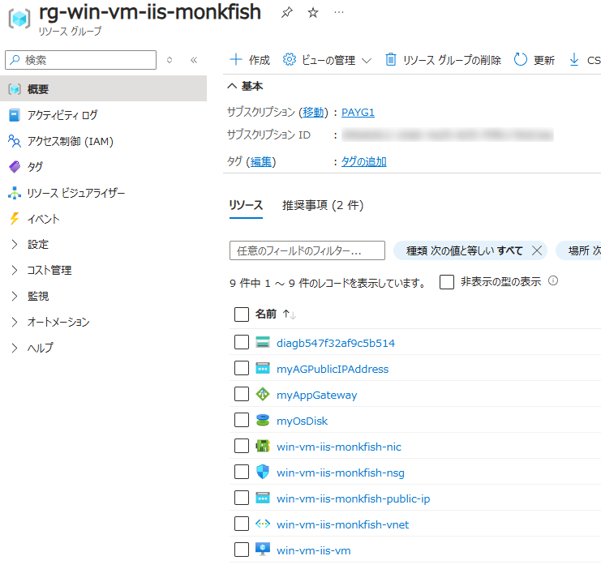
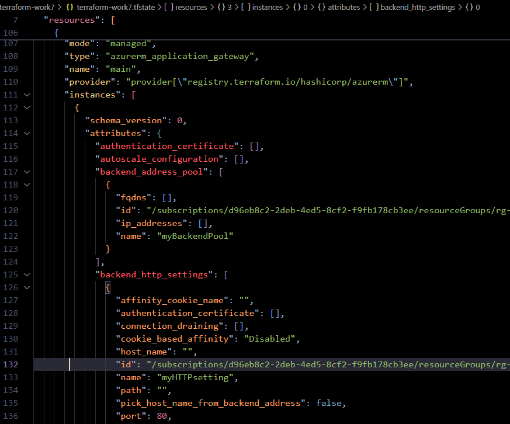

↓
work7 では「1. Data Sources を使用する」を検証します。


terraform plan、terraform applyするwork3 で作成したリソースグループに Application Gateway を追加する

main.tf に既存リソースの data block を用意する (必要な参照のみ、一意になるように指定する)
data "azurerm_resource_group" "res-rg" {
name = "rg-win-vm-iis-monkfish"
}
data "azurerm_virtual_network" "res-vnet" {
resource_group_name = data.azurerm_resource_group.res-rg.name
name = "win-vm-iis-monkfish-vnet"
}
data "azurerm_network_interface" "res-nic" {
resource_group_name = data.azurerm_resource_group.res-rg.name
name = "win-vm-iis-monkfish-nic"
}
main.tf に新規リソースの記述を行う (既存リソースは data block で参照する)
# ####################################################################
# Application Gateway を追加
# ####################################################################
variable "backend_address_pool_name" {
default = "myBackendPool"
}
variable "frontend_port_name" {
default = "myFrontendPort"
}
variable "frontend_ip_configuration_name" {
default = "myAGIPConfig"
}
variable "http_setting_name" {
default = "myHTTPsetting"
}
variable "listener_name" {
default = "myListener"
}
variable "request_routing_rule_name" {
default = "myRoutingRule"
}
resource "azurerm_subnet" "frontend" {
name = "myAGSubnet"
resource_group_name = data.azurerm_resource_group.res-rg.name
virtual_network_name = data.azurerm_virtual_network.res-vnet.name
address_prefixes = ["10.0.10.0/24"]
}
resource "azurerm_public_ip" "pip" {
name = "myAGPublicIPAddress"
resource_group_name = data.azurerm_resource_group.res-rg.name
location = data.azurerm_resource_group.res-rg.location
allocation_method = "Static"
sku = "Standard"
}
resource "azurerm_application_gateway" "main" {
name = "myAppGateway"
resource_group_name = data.azurerm_resource_group.res-rg.name
location = data.azurerm_resource_group.res-rg.location
sku {
name = "Standard_v2"
tier = "Standard_v2"
capacity = 2
}
gateway_ip_configuration {
name = "my-gateway-ip-configuration"
subnet_id = azurerm_subnet.frontend.id
}
frontend_port {
name = var.frontend_port_name
port = 80
}
frontend_ip_configuration {
name = var.frontend_ip_configuration_name
public_ip_address_id = azurerm_public_ip.pip.id
}
backend_address_pool {
name = var.backend_address_pool_name
}
backend_http_settings {
name = var.http_setting_name
cookie_based_affinity = "Disabled"
port = 80
protocol = "Http"
request_timeout = 60
}
http_listener {
name = var.listener_name
frontend_ip_configuration_name = var.frontend_ip_configuration_name
frontend_port_name = var.frontend_port_name
protocol = "Http"
}
request_routing_rule {
name = var.request_routing_rule_name
rule_type = "Basic"
http_listener_name = var.listener_name
backend_address_pool_name = var.backend_address_pool_name
backend_http_settings_name = var.http_setting_name
priority = 1
}
}
resource "azurerm_network_interface_application_gateway_backend_address_pool_association" "nic-assoc" {
network_interface_id = data.azurerm_network_interface.res-nic.id
ip_configuration_name = "terraform_work3_nic_configuration"
backend_address_pool_id = one(azurerm_application_gateway.main.backend_address_pool).id
}
terraform plan を実行する

terraform apply を実行する

リソースが作成された

tfstate を確認する
